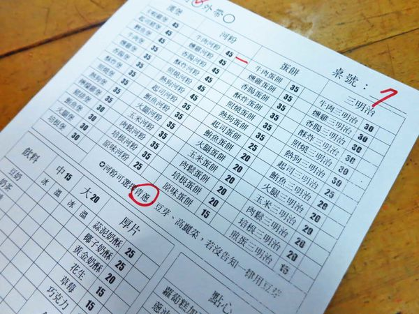
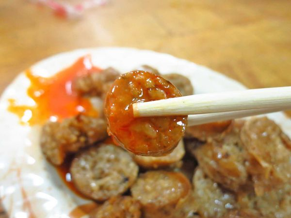

新竹湖口，對許多人來說，不算陌生 因為當地有一個湖口交流道，更是高架道路的最終點 而今天布咕先生來到新竹湖口，黑黑....不用說也知道 當然就是為了美食，這家是當時在網路上看到
原本想說左右夾殺的店通常沒什麼人 沒想到一進來有不少人在裡面~ 只可惜裡面的環境超悶熱的~~
店內除了一般常見的吐司、漢堡、三明治外 還有河粉，這還滿特別的 算是比較少見的樣式
一般早餐店都只有賣豆漿或奶茶 很少聽到豆奶，於是我就點了一下 發現這豆奶的味道還滿香濃的，跟小7的味道一樣好喝 而且還比較沒這麼甜~我超愛的~
原本沒有想說要點這一道的 但看其它人都有點，就忍不住點了一下份
一般早餐店很少看到有人賣米腸，而且顏色滿特別的 跟一般看到的不一樣
此外這邊的醬料高達五種 這種方式真的還是第一次看到
這米腸吃起來帶著鹹香鹹香的口感~ 還滿好吃的，一般常見的工廠都沒啥味道 但這家的米腸本身就有味道 果然沒有白點了~
薄薄的河粉裡面滿是蔥、牛肉、和蛋 用料一點都不手軟
這個牛肉的份量真的不是普通的多
軟Q軟Q的河粉搭配滿滿的蛋和蔥以及牛肉 超級滿足的 這麼大份竟然也只要45元 真的好划算~~
吃著吃著~~吃完了 緣緣早餐店 原本看似不起眼的小店，原來藏有這麼深厚的功力 怪不得會這麼多人來買 如果有機會的話，我一定會再來品嚐 因為不止餐點有特色，味道也很優
引自:http://nixojov.pixnet.net/blog/post/327807666